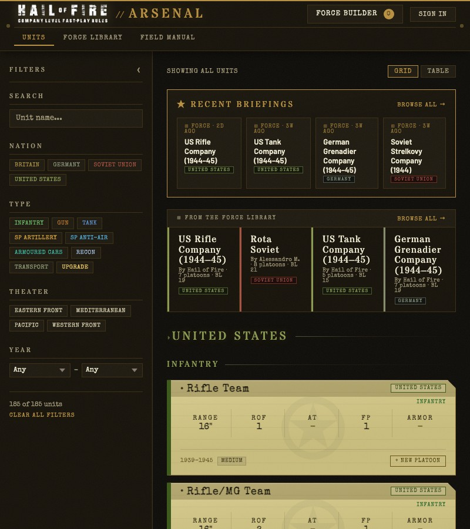
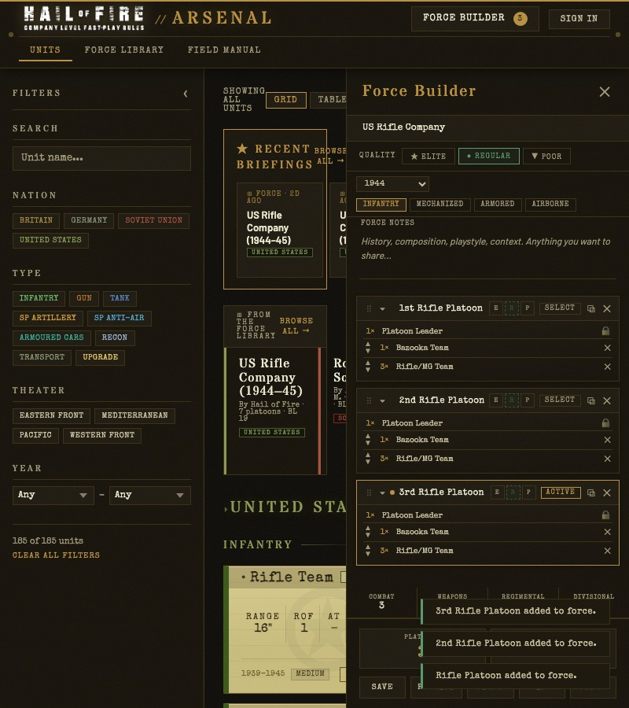
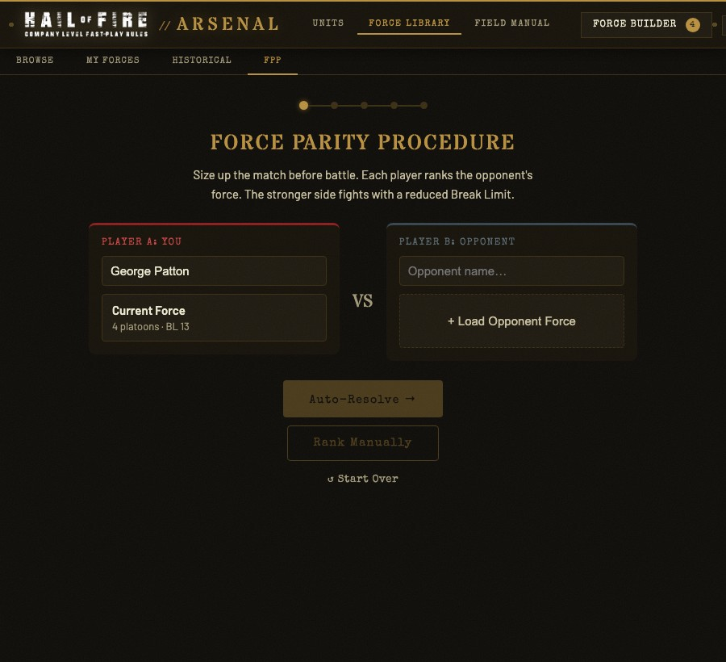
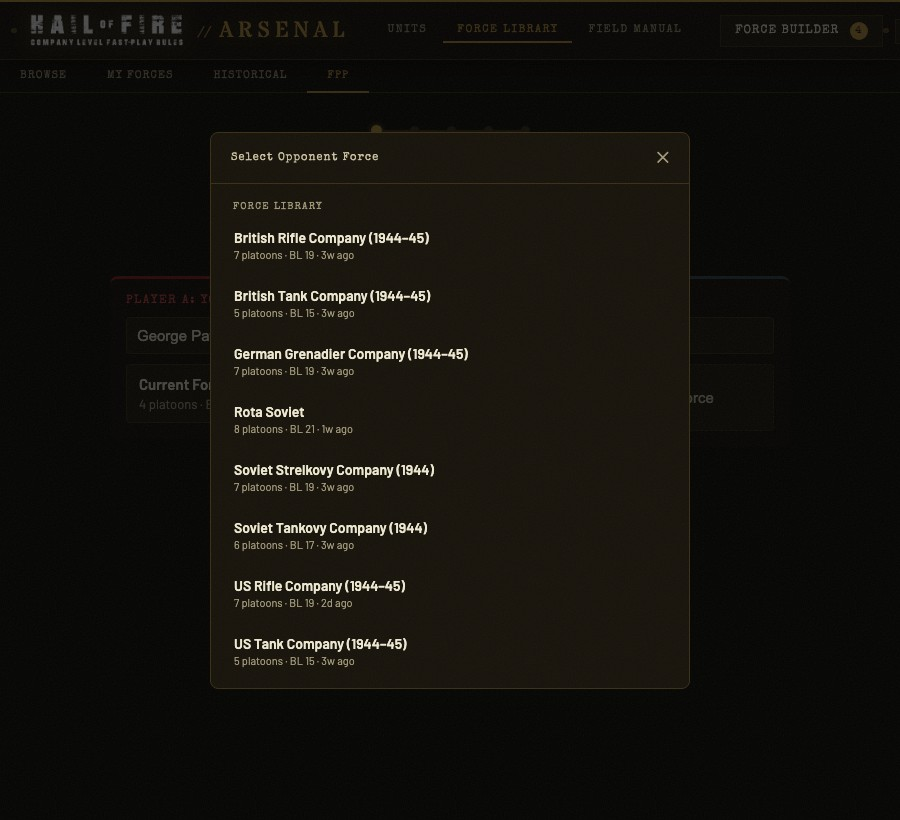
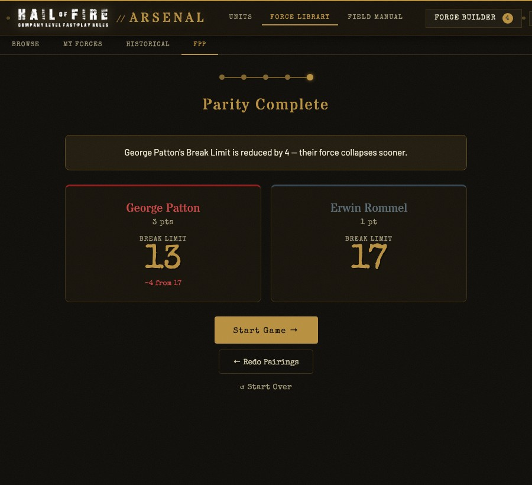
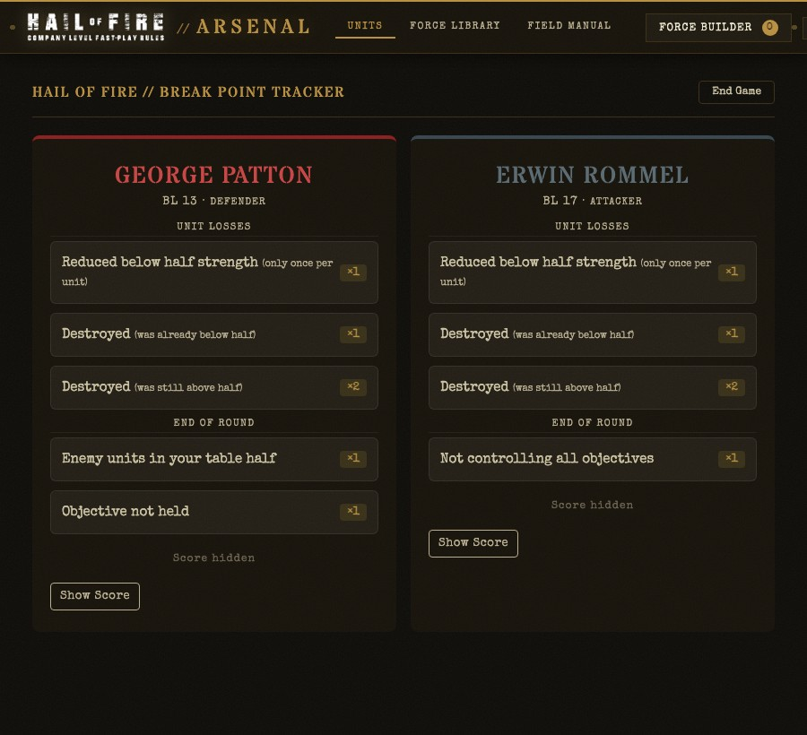

Build a Force
Start on the Units tab. The left panel lets you filter by nation, type, theater, or year. Browse the unit cards, add them to platoons, and shape your force from the Force Builder panel on the right.

Open the Force Builder
Click Force Builder in the top-right corner. The panel slides in from the right and stays open while you browse units.
Add your first platoon
Find a unit card (say, Rifle Team) and click + New Platoon at the bottom of the card. A new platoon containing that unit appears in the Force Builder.
Fill out the platoon
Add more units to the same platoon by clicking Add to Platoon on other unit cards. Teams are appended to whichever platoon is currently Active (highlighted in the Force Builder). To switch the active platoon, click Select on any row.
Use the up/down arrows on each team row to adjust quantity.
Set platoon quality
Each platoon defaults to Regular. If a platoon is Elite or Poor instead, click the E or P badge on that row to change it. You can also set an overall quality at the top of the Force Builder to update all platoons at once.
Add the rest of your platoons
Repeat (browse units, click + New Platoon) until your force is complete. Each new platoon appears in the Force Builder. The Platoons count and Break Limit update automatically as you build.

Name your force and fill in the details
At the top of the Force Builder, click the name field and type a force name. Below that, set:
- Quality: Elite, Regular, or Poor (default for all platoons)
- Year: the campaign period your force represents
- Type: Infantry, Mechanized, Armored, or Airborne
- Force Notes: background, playstyle tips, or anything you want your opponent to read before the game
Save & Publish
Save your force
Click Save at the bottom of the Force Builder. Your force is stored to your account and will appear under Force Library → My Forces on any signed-in device.
Publish (optional)
Click Publish to make your force visible in the public Force Library → Browse tab. Click again to un-publish.
Force Parity Procedure (FPP)
The FPP compares both forces and automatically calculates a Break Limit adjustment for the stronger side, giving the underdog a fairer fight without any subjective scoring. The fastest way to reach it is by opening your opponent's share link, which drops you straight into the FPP with their force already loaded. You can also reach it manually from Force Library → FPP.
Your force loads automatically
Whatever force is in the Force Builder appears as Player A: You. If you arrived via a share link, your last force is restored from your previous session automatically. Enter your name in the text field.

Load your opponent's force
If you opened the FPP via your opponent's share link, their force is already loaded. Otherwise click + Load Opponent Force to find a published force by name. Enter their name in the text field.

Auto-Resolve
With both forces loaded, click Auto-Resolve →. Arsenal scores each force against the other, accounting for unit types, quality, and the defender's inherent advantage, and instantly calculates any Break Limit adjustment.
Read the result
Arsenal shows which side has the stronger force and by how much. The weaker side keeps their full Break Limit; the stronger side's BL is reduced. This levels the playing field so neither side has a structural advantage going into the game.

Start Game
Click Start Game →. The Break Point Tracker opens immediately with both player names and their adjusted Break Limits already filled in, no re-entry needed.
Break Point Tracker
Break Points measure how much punishment your force has absorbed. Unit losses, every objective contested; each adds to your total. Your force routs when specific trigger events occur and your total already exceeds your Break Limit. Most games run several turns past the point a force first crosses its limit.
The tracker launches with both sides' names and Break Limits pre-filled straight from the FPP result. Both players share a single device. Each side has its own panel, and each player's score can be shown or hidden independently.

Record unit losses
Tap the appropriate button each time a loss event occurs:
- Reduced below half strength: ×1 BP (once per unit, ever)
- Destroyed (was already below half): ×1 BP
- Destroyed (was still above half): ×2 BP
Record end-of-turn events
At the end of each game turn, tap any that apply:
- Enemy units in your table half: ×1 BP
- Objective not held: ×1 BP
Reveal or hide your score
Click Show Score on your panel to reveal your running BP total. Click Hide Score to conceal it again. If your total has exceeded your Break Limit, the tracker flags your force as ⚑ Breaking whenever the score is visible, signalling that the next trigger event will end the game.
End Game
Click End Game in the top-right corner to close the tracker and return to Arsenal.